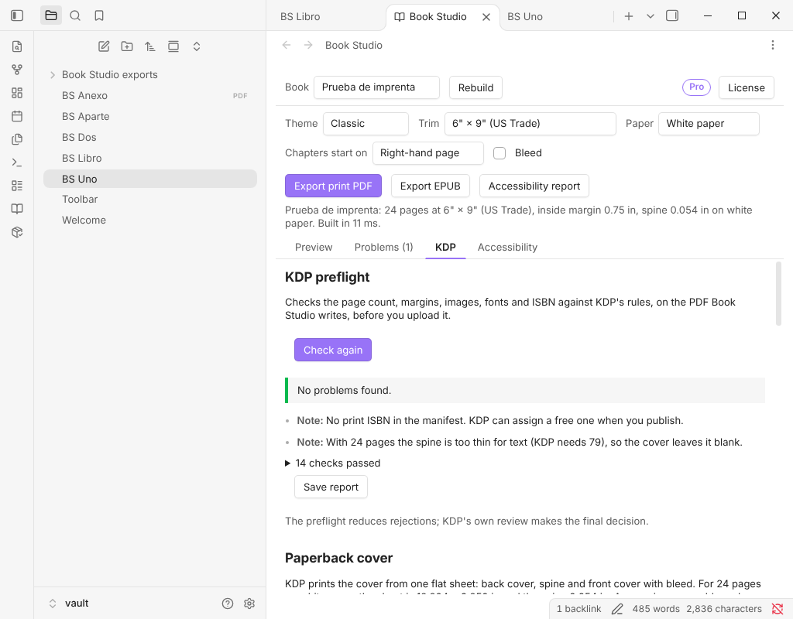

Obsidian plugin
Book Studio Pro
Turn your Markdown notes into a paperback Amazon KDP accepts and an accessible EPUB, with the finishing tools a published book needs.

What it does and who it is for
Book Studio turns a folder of Markdown notes into a print-ready PDF and an EPUB 3. Everything one author needs to publish one book on KDP is free. Pro is for authors and small publishers with several books or a catalog: genre designs, an index, editions and box sets.
It runs inside Obsidian (desktop and mobile) and in the web app. Your manuscript is never uploaded.
What Pro adds
- Genre themesThriller, Romance and Fantasy, and the ones to come.
- Back-of-book indexBuilt from the terms you list, with page numbers, set in two columns.
- EditionsDescribe a paperback, a large-print edition and an ebook in the manifest and export them together, each with its own ISBN, cover and report.
- Box sets and the accessible EPUB packCombine several books, and get an image-description audit, a conformance claim and a report for your EPUB.
What stays free, for good
- Unlimited books.
- All twelve KDP trim sizes.
- The Classic, Modern, Elegant, Non-fiction and Large Print themes.
- Footnotes at the foot of the page.
- The full paperback cover: back, spine and front on one sheet, with the right spine width, bleed and barcode space, as a PDF at the size KDP expects.
- The KDP preflight (page count, margins, images, blank runs, ISBN, metadata, spine and the PDF itself, with an HTML report; KDP's own review makes the final decision) and the KDP details sheet.
- Print PDF and EPUB 3, with its basic accessibility metadata.
- The live preview of everything, Pro designs included.
Nothing that was free is ever moved into Pro. You can preview any genre theme for free; the print PDF of a Pro theme is exported with a SAMPLE watermark until you add a key.
Price
79 USD, one-time payment.
One-time payment. No subscription, no usage limits. Commercial licence: use it for yourself or your team, but do not share or resell the file or the key.
How to activate
- Buy with the button on this page. The payment service sends your licence key in the receipt email.
- Open Book Studio's settings in Obsidian (or the licence panel of the web app) and paste the key.
- Press Activate. Pro features unlock right away.
Network and privacy
- Everything works offline. Your notes, images and exports never leave your device.
- The one network call: when you press Activate, the plugin sends the key, once, to the licence endpoint of the payment service to check it. After that the key is saved on your device and nothing is checked again.
- No telemetry, no analytics, no accounts, no self-update. This page has no cookies and loads nothing from other sites.
Refunds
Payments and refunds are handled by the payment service. Its terms, shown at checkout, apply.
Questions
Can I try Pro before I pay?
Yes. Preview any genre theme in the studio, and export a watermarked SAMPLE of the print PDF to see the real result.
Do I need another plugin?
No. Pro unlocks inside Book Studio, in the plugin and in the web app, with the same key.
Where do I find my key?
In the receipt email from the payment service.
Does it work offline after activation?
Yes. It works offline from the start; only Activate needs a connection, once.